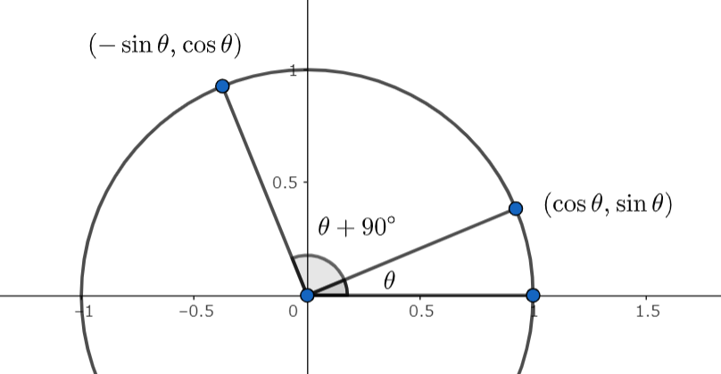

必ず覚えるもの一覧
自分が忘れがちなものを中心に書いています。「必ず」じゃないな～ってもの or 個人的に覚えたいだけのものには * が付いています。
幾何
三角形関連
-
五心, チェバの定理・メネラウスの定理
-
正弦定理 ... \(2R = \dfrac{a}{\sin A} = \dfrac{b}{\sin B} = \dfrac{c}{\sin C} ~\Longleftrightarrow~ \sin A = \dfrac{a}{2R}\)
-
余弦定理 ... \(\displaystyle c^2 = a^2 + b^2 - 2ab\cos C ~\Longleftrightarrow~ \cos C = \frac{a^2+b^2-c^2}{2ab} \)
-
三角形の面積 ... \(\displaystyle S = \frac 12 ab\sin C = \frac 12 (a+b+c)r = \frac{abc}{4R}\)
-
三角形の面積2 ... \(\displaystyle S = \frac 12 \, (\boldsymbol{x} \times \boldsymbol{y}) = \frac 12 \sqrt{|\boldsymbol{x}|^2|\boldsymbol{y}|^2 - (\boldsymbol{xy})^2}\)
-
*ヘロンの公式 ... \(s = \dfrac{a+b+c}{2}\) として \(\displaystyle S = \sqrt{s(s-a)(s-b)(s-c)}\)
-
\(A + B + C = \pi\) で成り立つ 和 \(\longleftrightarrow\) 半角積の公式
- 「和 \(\longleftrightarrow\) 半角積が成り立つ」ってことだけ覚え、その場で導出する。
\[ \left\{ \begin{align} \sin A + \sin B + \sin C &= 4\cos\dfrac A2 \cos\dfrac B2 \cos\dfrac C2 \\[8pt] \sin 2A + \sin 2B + \sin 2C &= 4\sin A \sin B \sin C \\[8pt] \cos A + \cos B + \cos C &= 4\sin\dfrac A2 \sin\dfrac B2 \sin\dfrac C2 + 1 \\[8pt] \cos 2A + \cos 2B + \cos 2C &= -4 \cos A \cos B \cos C - 1 \end{align}\right. \]
- Ravi 変換: \(a = x+y,~ b = y+z,~ c = z+x\) と変換したとき、三角形成立 \(\Longleftrightarrow x,y,z > 0\)
円関連
- 方べきの定理
とりあえず考えること
- \(R\) が入っていたら正弦定理・三角形の面積
三角関数
「 \(\sin, \cos, \tan\) が表すもの」は単位円で覚えるのが無難で分かりやすいと思います。
補角・余角みたいな公式は覚えず、書いてみたときの長さ・符号で判断しています。

上の図でいうと「 \(\cos(\theta + 90^\circ)\) は絶対値が小さくて負の値だから \(-\sin\theta\) だな」って感じです。
オイラーの公式 \(e^{i\theta} = (\cos\theta+i\sin\theta)\) を知っておくと、心配になっても計算できる。
-
加法定理 ... \( \left\{ \begin{array}{} \sin(\alpha \pm \beta) = \sin\alpha\cos\beta \pm \cos\alpha\sin\beta \\ \cos(\alpha \pm \beta) = \cos\alpha\cos\beta \mp \sin\alpha\sin\beta \\ \tan(\alpha \pm \beta) = \dfrac{\tan\alpha \pm \tan\beta}{1 \pm \tan\alpha\tan\beta} \end{array} \right. \)
-
積和 ... 加法定理思い浮かべて作る。
-
和積 ... \( \left\{ \begin{array}{} \sin(\alpha+\beta) + \sin(\alpha-\beta) = \sin\alpha\cos\beta \\ \cos(\alpha+\beta) + \cos(\alpha-\beta) = \cos\alpha\cos\beta \\ \end{array} \right. \) みたいな感じ。
-
2倍角 ... \( \left\{ \begin{array}{} \sin 2x = 2\sin x \cos x = (\sin x + \cos x)^2 - 1 = 1 - (\sin x - \cos x)^2 \\ \cos 2x = \cos^2x - \sin^2x = 2\cos^2x - 1 = 1 - 2\sin^2x \end{array} \right. \)
-
3倍角 ... \( \left\{ \begin{array}{} \sin 3x = -4\sin^3 x + 3\sin x \\ \cos 3x = 4\cos^3 x - 3\cos x \end{array} \right. \)
-
半角 ... \(\cos\) の2倍角を思い浮かべる。
-
合成 ... \(a\sin\theta + b\cos\theta = (r\cos\alpha)\sin\theta + (r\sin\alpha)\cos\theta = r\sin(\theta+\alpha)\)
- ただし \(r = \sqrt{a^2+b^2}, ~ \cos\alpha = a/r, ~ \sin\alpha = b/r\) である。
- 右辺が \(\cos(\theta+\alpha)\) にしたいときも同様に加法定理の形を思い浮かべる。